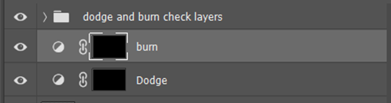

How to create flawless skin using Dodge and Burn

In the world of digital photography postproduction of your photos are especially important. Fixing blemishes and the skin on your model is necessary. Imperfections can be very distracting and will take away from what you are trying to show.
Removing Blemishes
Fixing the more obvious blemishes and wrinkles should be the first thing you do. This creates a cleaner image for you to work with. An important tool that is very simple to use is the healing brush tool.
1. First, you're going to need to create a new layer by selecting the new layer icon. 
2. After creating the layer select the healing brush. Right click the option and select “Healing Brush Tool” in the drop-down menu
3. Make sure you have the Sample settings, “Current and Below” on the top bar.

4. From here you can work methodically through each blemish. Hold the “Alt” key and left click to sample the skin you would like to cover the blemish with. Then left click to cover the blemish.
Dodge And Burn
Dodge and burn, is a technique that all high end photography studios use. This technique smooths the skin and cleans up some of the less obvious blemishes and gives your model even better skin.
Step 1: Creating Check Layers
To begin we are going to need to create check layers. We are going to take the color away from the image so we aren't distracted during dodging and burning. To do this:
1. Select the adjustment layer icon in the menu under the layer options.
2. Select the solid color option.
3. A menu will pop up and select a color with 0% saturation. In this example I chose dark gray.
4. Change the blend mode of that layer from “Normal” to “Color”
5. Make a “Curves” layer by selecting the adjustment layer icon and select curves. Adjust the curve so the imperfections in the face are more noticeable.
6. To keep the layer menu clean we are going to group the check layers we’ve just created. Hold “Ctrl” and left click the layers, next press “G” to create the group.
Step 2: Creating the Dodge and Burn Layers
1. Create a “Curves” adjustment layer like before, only this time increase the entire curve.
2. Select the layer, hold “Ctrl” and press “I”, invert the mask layer so the effect won't show. This is your dodge layer.
3. While your dodge layer is selected. Hold “Ctrl” and press “J” to copy the layer. Select the icon to readjust the curve downward. This is your burn layer.

4. Remember to properly label layers to make it easier to work with.

Step 3: The Fun Stuff
Now that you have these two mask layers it's time to get to the fun stuff. Because the dodge and burn layers are inverted you will need to paint white on the layer to have the effect show. This is done using the paintbrush tool.
1. Select the paintbrush in the toolbar.
2. You will first need to set your brush to, “Soft Round and turn down the brush to 1%. This gives us better control of our brush and makes it less destructive.
3. To smooth the image you will want to paint the darkest areas by brightening them up with your dodge mask layer by painting white. Paint the lightest areas with the burn layer by painting white on the image. Go through the photo little by little touching up areas.

If you ever make a mistake or would like to redo layer painting the layer over with black or holding, “Ctrl” and pressing “Z” will erase them.
The Finished Image
In photography, skin is the foundation of a beautiful image. This application has given us the tools to make anyone have flawless skin. This technique takes practice, but once you master it you can create incredible images!
Check out this video by PiXimperfect, he explains it like I do in video format.